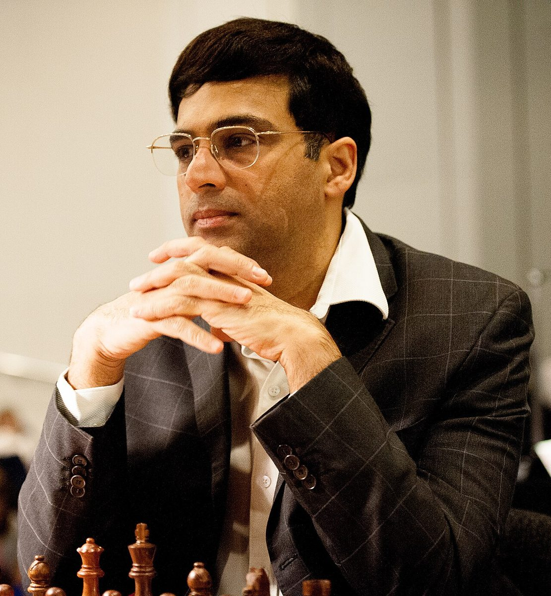

On This Day in 2013: Magnus Carlsen Dethrones Viswanathan Anand in Chennai
The 22-year-old Norwegian grandmaster secured a 6½–3½ victory in Game 10 to claim his first undisputed world chess championship.

On 22 November 2013, 22-year-old Norwegian grandmaster Magnus Carlsen became the 16th undisputed world chess champion by drawing Game 10 against defending champion Viswanathan Anand at the Hyatt Regency hotel in Chennai, India. The half-point sealed a 6½–3½ victory in the scheduled 12-game match, unseating Anand in his home city and ending the Indian grandmaster's six-year reign with two games to spare.
Carlsen entered the contest as the world's top-rated player, holding a FIDE rating of 2870 to Anand's 2775. Anand, 43, had held the undisputed world crown since 2007 and had successfully defended it in matches against Vladimir Kramnik, Veselin Topalov, and Boris Gelfand. Yet Carlsen arrived having won the 2013 Candidates Tournament in London and having maintained the world No. 1 ranking since July 2011.
The Chennai Breakthrough

The match opened cautiously, with both grandmasters feeling out preparation in four consecutive draws. Carlsen later pointed to Game 4 as the turning point for his confidence, noting that surviving an early tactical squeeze gave him the conviction that the champion was equally vulnerable.
Carlsen broke the deadlock in Game 5. Playing with the white pieces, he steered a Queen's Gambit setup into an endgame and converted an extra pawn after 58 moves. One day later, in Game 6, Carlsen struck again. Facing Anand's Ruy Lopez, he transitioned into a rook-and-pawn endgame and outmanoeuvred the defending champion over 67 moves to build a two-point advantage.
Anand attempted to alter the match's course in Game 9 on 21 November, launching an aggressive kingside attack with White in the Sämisch Variation of the Nimzo-Indian Defence. Carlsen countered on the queenside, pushing his passed b-pawn down the board. Under time pressure, Anand committed a fatal blunder with 28.Nf1?. After Carlsen responded with 28...Qe1, Anand resigned immediately, giving the Norwegian a 6–3 lead and putting him within a half-point of the world title.
Game 10: Fighting to the Bare Kings
Facing elimination on 22 November, Anand deployed the Sicilian Defence with the black pieces. Carlsen answered with the Moscow Variation (3.Bb5+). Instead of steering toward a rapid, conservative draw that would have sufficed to take the title, Carlsen pushed for an advantage throughout the afternoon.
The game developed into a sharp knight-and-pawn endgame that tested both players over four hours and 45 minutes. Anand defended accurately in the final hour, eliminating Carlsen's pawns until only bare kings and two pawns remained. The draw was agreed after 65 moves, completing Carlsen's unbeaten run across the ten games with three wins and seven draws.
"My mistakes didn't happen by themselves, he managed to provoke them. So full credit to him," Anand said in the post-match press conference. Carlsen, who earned $1.53 million of the $2.55 million purse, celebrated by jumping into the hotel pool fully clothed alongside his coaching team.
A New Era in World Chess
At 22 years, 11 months, and 23 days, Carlsen became the second-youngest undisputed world chess champion in history, behind only Garry Kasparov, who won the title in 1985 at age 22 years and six months. The defeat marked the first time in Anand's 22-year world championship match career that he failed to record a single individual game victory.
The Chennai triumph began a decade of dominance for the Norwegian. Carlsen defended his world title against Anand in Sochi in 2014, Sergey Karjakin in New York in 2016, Fabiano Caruana in London in 2018, and Ian Nepomniachtchi in Dubai in 2021. In May 2014, he reached a peak FIDE rating of 2882, the highest mark recorded in chess history. He vacated the classical championship in 2023 due to a lack of motivation, but remains the world's top-ranked classical player.